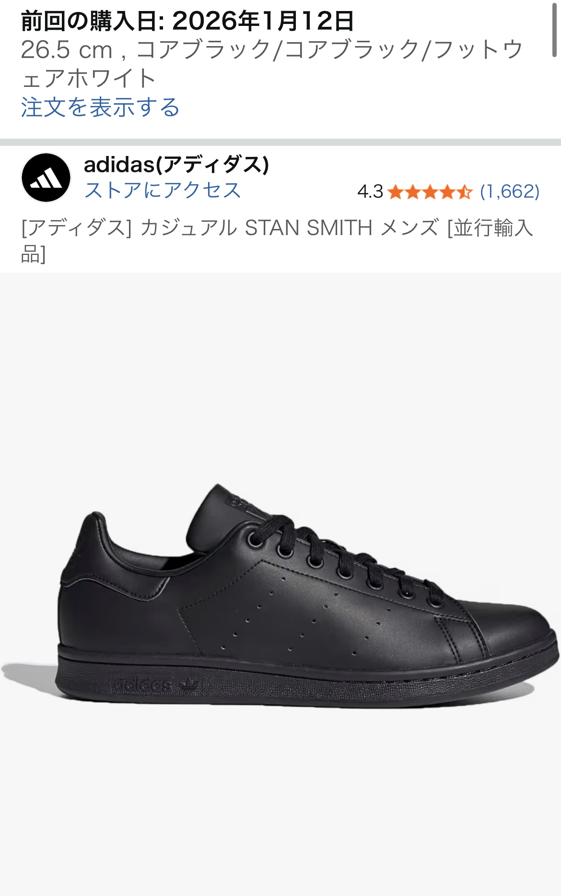

アディダス スタンスミス コアブラック レザースニーカーをレビュー【きれいめにハマる黒スニーカー】
アディダスの定番「スタンスミス」の中でも、革系の黒スニーカーを探している人に人気なのが、コアブラック/コアブラック/フットウェアホワイトのモデルです。ここでは実際の口コミと一般的な特徴をもとに、デザイン・履き心地・デメリット・他モデルとの比較という視点でまとめていきます。

スタンスミス コアブラックの第一印象レビュー
口コミでは「パートナーも好印象でした」「革系で黒のスニーカーを求めていたので、キレイめで格好良くて満足」という声があり、清潔感と大人っぽさを両立した黒スニーカーとして評価されています。白ベースのスタンスミスに比べて主張が強すぎず、ジャケットスタイルやきれいめカジュアルにも合わせやすいのがポイントです。
アッパーはレザー調で、いわゆる「スポーツスニーカー感」が前面に出にくく、革靴とスニーカーの中間のような雰囲気を出しやすいのが魅力です。通勤のカジュアルデーや、きれいめなデートコーデにも取り入れやすく、「スニーカーだけどラフになりすぎない」バランスを求める人に向いています。
シュータンにはスタンスミスさんのイラストが入っていますが、「黒なので目立たない」という口コミどおり、ロゴ主張が控えめなのも好印象です。ブランド感は欲しいけれど、ロゴが強く出るのは避けたいという人にはちょうどよいデザインと言えます。
実際に感じやすいメリットとデメリット
メリットとしては、まずコーディネートのしやすさが挙げられます。黒レザー×ホワイトソールという組み合わせは、デニム・チノパン・スラックスなど多くのボトムスと相性が良く、ワードローブに1足あると出番が多くなりやすいです。また、オールブラックではなくソールに白が入ることで、足元が重くなりすぎず、季節を問わず使いやすい印象になります。
一方で、デメリットとして意識しておきたいのはサイズ選びとレザー特有の履き始めの硬さです。一般的にレザースニーカーは、履き始めはやや硬く感じる場合があり、足幅が広い方や甲が高い方は、長時間の歩行で疲れを感じることがあります。口コミでもサイズ感に言及されることが多いため、普段のアディダスのサイズ感を基準に、余裕を持ったサイズ選びを検討するのがおすすめです。
また、黒レザーは汚れが目立ちにくい一方で、ホコリや擦れによるテカリ・シワが出てくることがあります。これはレザー系スニーカー全般に言える傾向ですが、定期的にブラッシングやクリームでケアをしてあげると、より長くきれいな状態を保ちやすくなります。
白スタンスミスや他の黒スニーカーとの比較
スタンスミスといえば白×グリーンのイメージが強いですが、コアブラックモデルは「落ち着いた大人のスタンスミス」という立ち位置に近いです。白モデルは爽やかさや軽さが魅力な一方で、汚れが目立ちやすく、きれいめな場面ではカジュアルに寄りすぎると感じる人もいます。
一方、コアブラックは革靴寄りの印象を出しやすく、ジャケットスタイルやモノトーンコーデとの相性が良いのが特徴です。ニューバランスなどのボリューム感のある黒スニーカーと比べると、スタンスミスはシルエットがすっきりしているため、細身のパンツやテーパードシルエットと合わせたときに、足元がスマートにまとまりやすいと感じる人も多いはずです。
「休日は白スニーカーでラフに、平日やデートは黒レザースニーカーで少しきれいめに」といった使い分けをしたい人にとって、スタンスミス コアブラックはバランスの良い選択肢になりやすいモデルと言えます。
こんな人にスタンスミス コアブラックをおすすめしたい
以上を踏まえると、スタンスミス コアブラックは次のような人に特に検討しやすいモデルです。
- きれいめ寄りの黒スニーカーを1足ワードローブに加えたい人
- パートナーや周りからの印象も意識しつつ、さりげなくブランド感を出したい人
- 白スニーカーはすでに持っていて、シックなコーデ用のスニーカーを探している人
- 革靴ほどかっちりしすぎず、スニーカーほどラフになりすぎない足元を作りたい人
レザー系の黒スニーカーは、季節やトレンドに左右されにくく、長く使いやすいアイテムです。スタンスミスという定番モデルをベースにしているため、コーディネートの参考例も多く、ファッションにそこまで自信がない人でも取り入れやすいのも魅力です。
まとめ｜きれいめ黒スニーカーとしてスタンスミスを候補に入れる価値
スタンスミス コアブラック/コアブラック/フットウェアホワイトは、「革系で黒のスニーカーが欲しい」「きれいめコーデにも合う一足が欲しい」というニーズに応えやすいモデルです。ロゴ主張は控えめで、パートナーからも好印象という口コミがあるように、日常使いから少しきちんとした場面まで幅広く活躍しやすい一足と言えます。
サイズ感やレザー特有の硬さなど、気をつけたいポイントはありますが、ケアをしながら履いていくことで、自分の足に馴染んだ一足になっていきます。黒レザースニーカーを検討しているなら、スタンスミス コアブラックを候補に入れて比較してみる価値は十分にあるでしょう。
※本記事は実際の口コミおよび一般的な特徴をもとに記載しており、感じ方には個人差があります。購入前には最新の商品情報・価格・在庫状況をAmazonの商品ページでご確認ください。